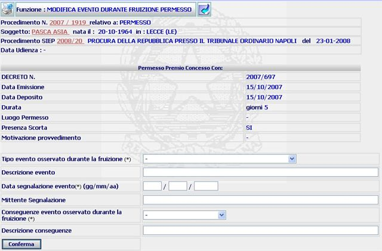
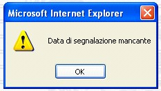

MODIFICA EVENTO DURANTE FRUIZIONE PERMESSO/LICENZA: La funzione consente di visualizzare i dati relativi al decreto di concessione del/la permesso/licenza e di registrare l'evento osservato durante la fruizione dello/a stesso/a.
LE MASCHERE VIDEO
La funzione viene realizzata attraverso la maschera seguente (come esempio è stata inserita la maschera relativa ad un procedimento riguardante un permesso, ma la stessa maschera con le medesime caratteristiche è utilizzata per le licenze):

COME FARE PER ...
| Per visualizzare il dettaglio del procedimento Sius l'utente deve cliccare sul link relativo all'Anno/Numero del procedimento Sius evidenziato in rosso; |

| Per visualizzare il dettaglio del soggetto l'utente deve cliccare sul link relativo al cognome/nome del soggetto evidenziato in rosso; |

| Per visualizzare il dettaglio del procedimento Siep l'utente deve cliccare sul link relativo all' Anno/Numero del procedimento Siep evidenziato in rosso; |

|
Per registrare il tipo di evento l'utente deve: |
selezionare le voci interessate dalle apposite tendine;
compilare i restanti campi e selezionare
il bottone
 .
.
Completata la registrazione dell'evento il sistema visualizza la maschera di dettaglio evento permesso/licenza
CAMPI
I campi da compilare sono i seguenti:
| Tipo evento osservato durante la fruizione | campo da compilare selezionando, dall'apposita tendina, la voce interessata. |
| Descrizione evento | campo a testo libero nel quale poter specificare meglio l'evento che si sta registrando |
| data segnalazione evento | campo obbligatorio da compilare con il giorno, mese, anno in formato numerico. |
| Mittente segnalazione | campo facoltativo nel quale indicare il mittente della segnalazione |
| Conseguenze evento osservato durante la fruizione | campo da compilare selezionando, dall'apposita tendina, la voce interessata. |
| Descrizione conseguenze | campo a testo libero nel quale specificare meglio le conseguenze legate all'evento. |
PULSANTI
Sono presenti i pulsanti
 e
e
 , facenti parte del gruppo di
pulsanti di "Uso Comune"
, facenti parte del gruppo di
pulsanti di "Uso Comune"
|
PULSANTE |
DESCRIZIONE |
|
|
Questo pulsante ha
lo scopo di stampare il contesto (videata) |
|
|
Questo pulsante ha lo scopo di consentire di tornare, visualizzandola, alla maschera precedente a quella attuale. |
CONTROLLI
A fronte della pressione
del bottone
 , il sistema verifica che il campo obbligatorio relativo la data di
segnalazione siano stato compilato, diversamente presenterà il seguente
messaggio:
, il sistema verifica che il campo obbligatorio relativo la data di
segnalazione siano stato compilato, diversamente presenterà il seguente
messaggio:
